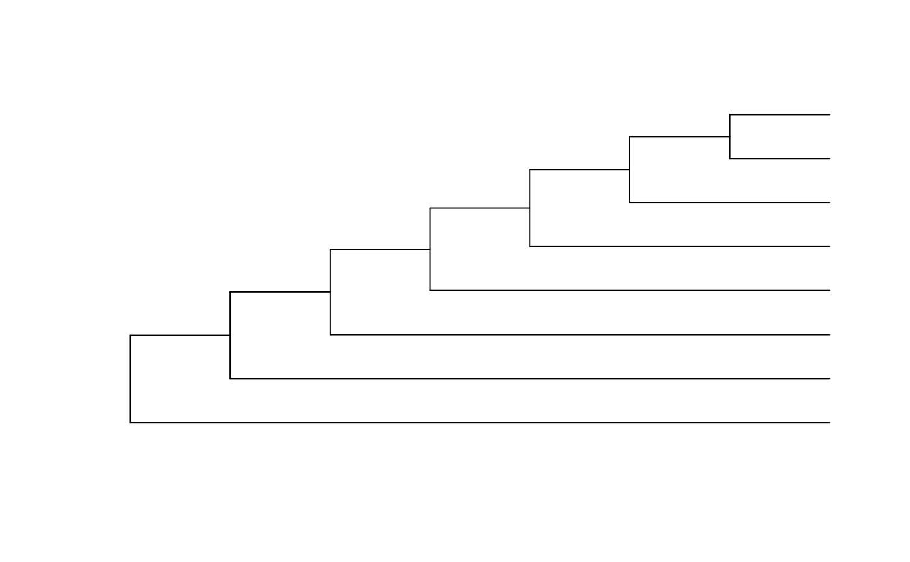

Returns an integer that uniquely represents the shape of an n-tip binary tree, ignoring tip labels.
Usage
unrootedKeys
RootedTreeShape(tree)
RootedTreeWithShape(shape, nTip, tipLabels)
UnrootedTreeWithShape(shape, nTip, tipLabels = character(nTip))
UnrootedTreeWithKey(key, nTip, tipLabels = character(nTip))
UnrootedTreeShape(tree)
UnrootedTreeKey(tree, asInteger = FALSE)
.UnrootedKeys(nTip)
UnrootedKeys(..., envir = parent.frame())
NUnrootedShapes(nTip)
NRootedShapes(nTip)Format
unrootedKeys is a list of length 22; each
entry is a vector of integers corresponding to they keys (not shape numbers)
of the different unrooted tree shapes with nTip leaves.
Arguments
- tree
A tree of class
phylo.- shape
Integer specifying shape of tree, perhaps generated by
TreeShape().- nTip
Integer specifying number of tips.
- tipLabels
Character vector listing the labels assigned to each tip in a tree, perhaps obtained using
TipLabels().- key
Integer specifying the key (not number) of an unrooted tree.
- asInteger
Logical specifying whether to coerce the return value to mode
integer: only possible for values < 2^31. IfFALSE, values will have classinteger64.- ...
Value of
nTip, to pass to memoized.UnrootedKeys.- envir
Unused; passed to
addMemoization().
Value
TreeShape() returns an integer specifying the shape of a tree,
ignoring tip labels.
RootedTreeWithShape() returns a tree of class phylo
corresponding to the shape provided. Tips are unlabelled.
UnrootedTreeWithShape() returns a tree of class phylo
corresponding to the shape provided. Tips are unlabelled.
UnrootedTreeWithKey() returns a tree of class phylo corresponding
to the key provided. Tips are unlabelled.
UnrootedKeys() returns a vector of integers corresponding to the
keys (not shape numbers) of unrooted tree shapes with nTip tips.
It is a wrapper to .UnrootedKeys(), with memoization, meaning that results
once calculated are cached and need not be calculated on future calls to
the function.
NUnrootedShapes() returns an object of class integer64 specifying
the number of unique unrooted tree shapes with nTip (< 61) tips.
NRootedShapes() returns an object of class integer64 specifying
the number of unique rooted tree shapes with nTip (< 56) leaves.
Details
Rooted trees are numbered working up from the root.
The root node divides n tips into two subtrees. The smaller subtree may contain $a = 1, 2, ..., n/2$ tips, leaving $b = n - a$ tips in These options are worked through in turn.
For the first shape of the smaller subtree, work through each possible shape for the larger subtree. Then, move to the next shape of the smaller subtree, and work through each possible shape of the larger subtree.
Stop when the desired topology is encountered.
Unrooted trees are numbered less elegantly. Each cherry (i.e. node subtending a pair of tips) is treated in turn. The subtended tips are removed, and the node treated as the root of a rooted tree. The number of this rooted tree is then calculated. The tree is assigned a key corresponding to the lowest such value. The keys of all unrooted tree shapes on n tips are ranked, and the unrooted tree shape is assigned a number based on the rank order of its key among all possible keys, counting from zero.
If UnrootedTreeShape() or UnrootedTreeKey() is passed a rooted tree,
the position of the root will be ignored.
The number of unlabelled binary rooted trees corresponds to the Wedderburn-Etherington numbers.
See also
Unique number for a labelled tree: TreeNumber()
Examples
RootedTreeShape(PectinateTree(8))
#> integer64
#> [1] 0
plot(RootedTreeWithShape(0, nTip = 8L))

NRootedShapes(8L)
#> integer64
#> [1] 23
# Shapes are numbered from 0 to NRootedShapes(n) - 1. The maximum shape is:
RootedTreeShape(BalancedTree(8))
#> integer64
#> [1] 22
# Unique shapes of unrooted trees:
NUnrootedShapes(8L)
#> integer64
#> [1] 4
# Keys of these trees:
UnrootedKeys(8L)
#> [1] 0 1 2 4
# A tree may be represented by multiple keys.
# For a one-to-one correspondence, use a number instead:
unrootedShapes8 <- as.integer(NUnrootedShapes(8L))
allShapes <- lapply(seq_len(unrootedShapes8) - 1L,
UnrootedTreeWithShape, 8L)
plot(allShapes[[1]])
sapply(allShapes, UnrootedTreeShape)
#> [1] 0 1 2 3
sapply(allShapes, UnrootedTreeKey, asInteger = TRUE) # Key >= number
#> [1] 0 1 2 4
# If numbers larger than 2>31 are required, sapply needs a little help
# with 64-bit integers:
structure(sapply(allShapes, UnrootedTreeKey), class = "integer64")
#> integer64
#> [1] 0 1 2 4